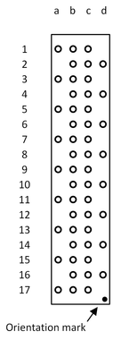
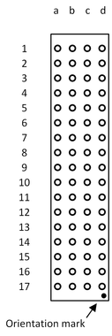
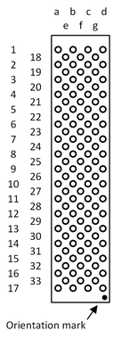
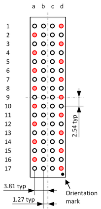
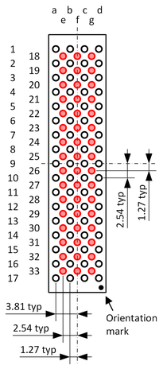

Pogo block compatibility
The pogo pin density of pogo blocks can increase with newer versions of the pogo cables, test head cards or systems. In addition, due to the modular design of the V93000 system, many different configurations can be present. To ensure the compatibility of your DUT board with future hardware upgrades or other configurations, consider the increasing pogo pin density when designing a new DUT board.
In this context, compatibility with newer versions of the hardware or other configurations means that extra landing pads are provided for the pins of higher density pogo blocks.
| Standard‑density (SD) | High‑density (HD) | Very‑high‑density (VHD) |
 |
 |
 |
| This is the recommended layout if you expect that your standard‑density DUT board will also be installed on systems with high‑density pogo blocks. | Digital cards and DC Scale cards with higher channel count will
use the very‑high‑density pogo blocks to minimize the
number of required pogo blocks per test head card. Note If you expect your new DUT board to be installed on systems
with very‑high‑density (VHD) pogo blocks, we
strongly recommend using this layout, even if currently only
lower density pogo blocks are configured. |
For dimensions and detailed drawings of the SD, HD and VHD pogo blocks, refer to Layout information: DUT board. For newer test head cards, simple drawings also are available in section Pogo pin assignment. For the recommended design of pogo pads, refer to Pogo pad and via design.
Landing pads of SD and HD pogo blocks
The following graphics show the additional landing pads for the SD pogo type block and the HD type pogo block marked in red.
| Standard-density (SD) | High-density (HD) |
 |
 |
|
This is the recommended layout if you expect that your standard‑density (SD) DUT board will also be installed on systems with high‑density (HD) pogo blocks. If you expect that you also need to install the DUT board on a test system that is equipped with VHD type pogo blocks, use the design for the HD pogo block shown on the right. |
This is the recommended layout if you expect that your high‑density (HD) DUT board will also be installed on systems with very‑high‑density (VHD) pogo blocks. |
Functional changes
- Introduced before SmarTest 6.3.2
- SmarTest 7.5.3 / 8.3.2: Recommendation for very-high-density (VHD) pogo blocks added.